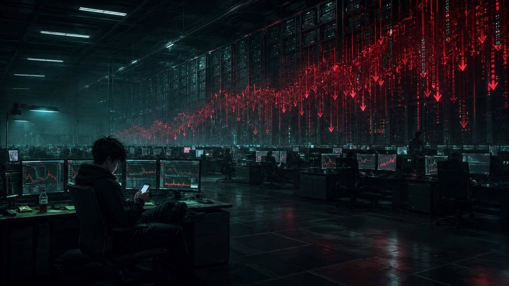

指數已經在這裡晃了很久。
上不去，也下不來。
每天開盤都有新的故事。降息、AI、財報、外資回補、主力進場。多頭總能找到理由，空頭也永遠有數據。盤中偶爾一根長紅拔起，群組瞬間熱鬧起來，有人貼突破圖，有人開始算下一個滿足點。
但每次到了那裡，賣單就出現了。
沒有恐慌，沒有摜殺。甚至賣得很有禮貌。
你買一千張，他給你一千張。你再追兩千張，他再給你兩千張。
像一堵透明的牆。
看不到，卻永遠撞得到。
大家開始猜。
「外資在倒貨吧。」
「不像，可能是壽險。」
「大股東？」
「主權基金？」
沒有人知道。我們只能從每天留下來的成交紀錄，試著拼湊那個人的輪廓。

但有時候我會想，事情可能根本沒有我們想得那麼複雜。
也許台北、香港、新加坡，甚至紐約某棟大樓裡，有一間冷氣開得很強的操盤室。
角落坐著一個寫程式的阿宅。頭髮有點亂，穿著帽T，桌上是一杯喝到沒氣的可樂。
他甚至沒有在看K線。
昨晚改完程式，測試沒問題。今天早上九點，按下執行。螢幕跳出幾行字。然後他拿起手機，開始滑短影片。
SELL ALGORITHM：RUNNING
但在他身後，是我們一輩子都沒看過的資金。
幾百億、幾千億，或更多。
於是市場裡幾萬個人研究了一整晚的均線、籌碼、基本面、融資、法人動向，最後全部撞在他幾個月前寫下的一行程式碼上。
SELL。
今天下午一點十三分，指數又來了。
量放大。紅K突破。
聊天室有人喊：「過了！」
我沒有回。只是盯著五檔。
幾秒鐘後，那個熟悉的數字又跳了出來。
賣單，一層一層掛上去。
三千張。五千張。一萬張。
剛才還在歡呼的人突然安靜了。
我看著那些數字，忽然有一種很奇怪的感覺。
我們總以為市場背後站著某個高手。他看懂了我們沒看懂的景氣，知道我們不知道的消息，所以選擇在這裡賣出。
但最可怕的也許不是這樣。
最可怕的是——
他根本沒有看空。
他甚至不知道今天漲了多少。
只是幾個月前，有人告訴他：「到這個價位，就賣。」
而現在，程式還在跑。
我們不知道那是誰的錢。不知道還剩多少。更不知道，那行程式的下一個條件，寫的是什麼。